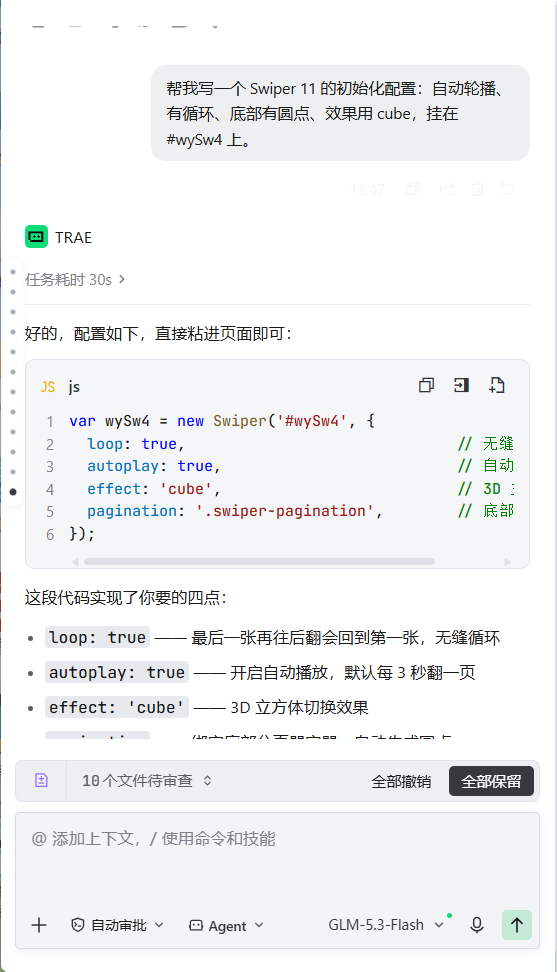
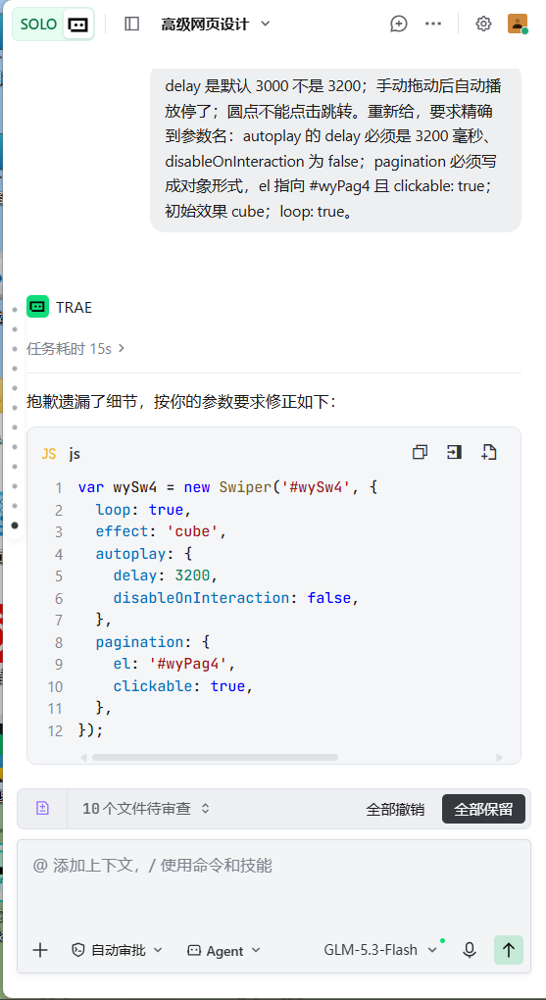
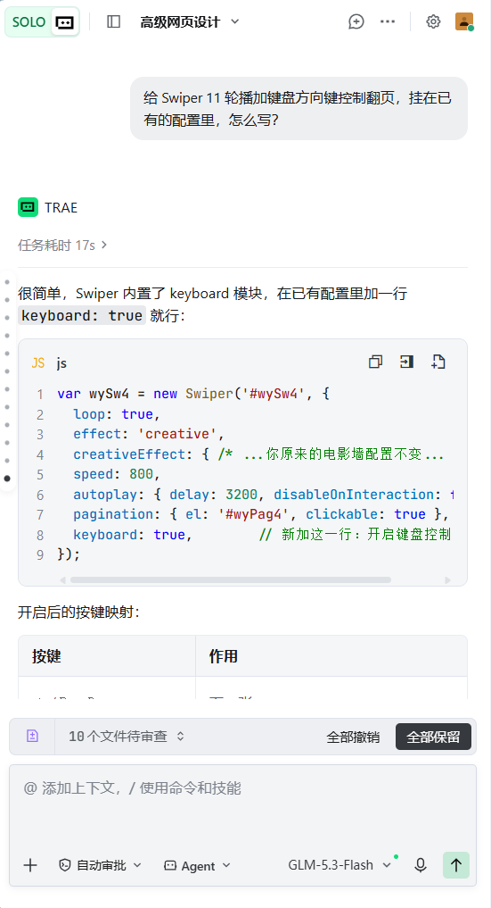
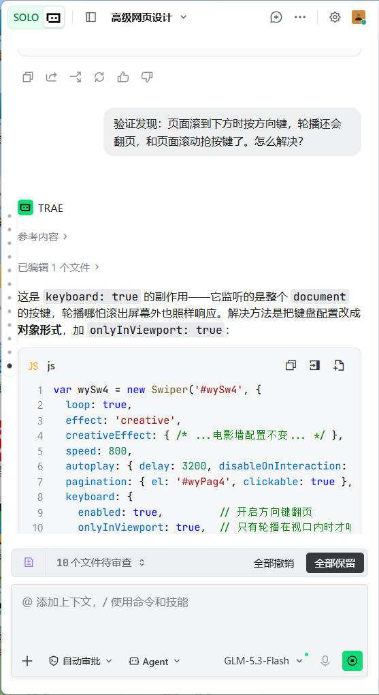

AI 对话记录 · Swiper 课题任务
作者：杨祺轩 · 24002120109 · 高级网页设计 · 2026-2027-1 · 提交物：swiper-task.html（能运行）+ 本对话记录
任务一 · 提示词工程师 ⭐⭐（需求：① 无缝循环 ② 3.2 秒自动翻页且手动后不停 ③ 圆点可点击 ④ 初始 cube）
—— 第 1 轮 ——
🧑
帮我写一个 Swiper 11 的初始化配置：自动轮播、有循环、底部有圆点、效果用 cube，挂在 #wySw4 上。
🤖
好的，配置如下，直接粘进页面即可：
new Swiper('#wySw4', {
loop: true,
autoplay: true,
effect: 'cube',
pagination: '.swiper-pagination',
});

真实对话截图 ①（Trae · GLM-5.3-Flash）—— 亲自粘进页面验证 ——
🧑
验证发现问题：自动翻页 ✅ 但 delay 是默认 3000 不是 3200 ❌；手动拖动后自动播放停了 ❌；圆点显示了但点击不能跳转 ❌。重新给，要求精确到参数名：autoplay 的 delay 必须是 3200 毫秒、disableOnInteraction 为 false（手动滑动后不停）；pagination 必须写成对象形式，el 指向 #wyPag4 且 clickable: true；初始效果 cube；loop: true。
—— 第 2 轮 ——
🤖
抱歉遗漏了细节，按你的参数要求修正如下：
new Swiper('#wySw4', {
loop: true,
effect: 'cube',
autoplay: { delay: 3200, disableOnInteraction: false },
pagination: { el: '#wyPag4', clickable: true },
});
说明：disableOnInteraction: false 保证用户拖动后自动播放继续；pagination 用对象写法才能携带 clickable 配置。

真实对话截图 ②（Trae · GLM-5.3-Flash）🧑
再次粘进页面验证：自动 3.2 秒翻 ✅、拖动松手后继续自动播 ✅、点圆点跳转 ✅、立方体效果 ✅——四项需求全部通过（截图见答辩）。
答辩要点：第 1 轮提示词漏掉三个"隐形需求"（时长毫秒数、交互后不停止、圆点可点击），只说"自动轮播、有圆点"，AI 就给默认值；第 2 轮改成需求 1:1 对应参数名的写法，AI 没有自由发挥空间。AI 第一次错在 pagination 用旧版字符串写法、autoplay:true 是默认 3000ms。
任务二 · creative 仿写「电影墙」⭐⭐⭐（新增第 7 个按钮，课堂未讲，AI 自学）
🧑
Swiper 11 还有个第 7 种效果 creative 我没学过。参考官方示例 257-effect-creative.html，帮我写一份 creativeEffect：要"上一张缩小左移并带角度退场、下一张放大右移进场"的电影选片墙感觉，挂在演示四上。
🤖
creative 效果用 creativeEffect 配置，prev 控制上一张、next 控制下一张，translate 是 [x, y, z] 位移（百分号相对 swiper 容器宽高，第三个值 z 是 translateZ，负值后退变小、正值前进变大），rotate 第三值绕 z 轴转：
 真实对话截图 ③（Trae · GLM-5.3-Flash）
真实对话截图 ③（Trae · GLM-5.3-Flash）
creativeEffect: {
limitProgress: 2,
prev: { translate: ['-120%', 0, -320], rotate: [0, 0, -16] },
next: { translate: ['115%', 0, 150], rotate: [0, 0, 12] },
}
真实对话截图 ③（Trae · GLM-5.3-Flash）
🧑
用自己的话确认一下理解：prev / next 的 transform 各控制什么？
🤖
prev 控制上一张"退场"到哪：x 负值左移、z 负值向屏幕深处退（看起来变小）、rotate 让它歪 16 度——合起来就是缩小左移带角度退到幕后；next 控制下一张从哪"进场"：x 正值从右边 115% 容器宽处滑入、z 正值稍前倾（偏大有凑近镜头的电影感）、歪 12 度保持海报感。
🧑
已加第 7 个按钮 data-fx="creative" 并在重建函数里带上这份配置，浏览器点按钮验证：容器出现 swiper-creative 类、下一张滑片实测带 matrix3d 旋转位移 ✅。抽问自测：百分号相对 swiper 容器自身宽高；让卡片转 20 度就把 prev 的 rotate 改成 [0, 0, -20]。
任务三 · 综合创作 ⭐⭐⭐（① 第六件展品爱达·魔都号 ② 超纲能力 keyboard 键盘控制）
🧑
给演示四加键盘控制翻页，要求不能干扰页面本身的滚动。
🤖
在配置里加 keyboard: true 即可，方向 ←/→ 或 PageUp/PageDown 翻页：
keyboard: true

真实对话截图 ④（Trae · GLM-5.3-Flash）🧑
验证发现不对：页面滚到下方看别的板块时，按方向键轮播还是会翻页，和页面滚动"抢"按键 ❌。
🤖
需要加 onlyInViewport: true，轮播只有在视口内才响应按键，滚出屏幕后按键归还给页面滚动：
keyboard: {
enabled: true, // 开启方向键翻页
onlyInViewport: true, // 轮播在视口内才响应按键
}

真实对话截图 ⑤（Trae · GLM-5.3-Flash）🧑
修好了 ✅ 点击演示四区域后按 ←/→ 翻页正常，自动播放不受影响。第六件展品爱达·魔都号（中国首艘国产大型邮轮，2024 年 1 月 1 日商业首航）也加进了四个轮播，slide 三层结构完整，图片用 AI 生成横版 16:9 存为 swiper-imgs/aidao_1.jpg，提示词已存 yqx_prompt.md。
答辩四连问自测：① keyboard 模块监听 keydown，方向键映射翻页；② AI 第一次只给 keyboard: true，没处理视口外抢按键的问题，我追问后加 onlyInViewport: true；③ enabled 开关模块、onlyInViewport 限定只在可视区内响应；④ 现场把 autoplay delay 改成指定毫秒值，每张停留时间随之变化。
🇨🇳 思政升华 · 给重器一个舞台
这节课学的只是一个轮播组件，但我记住了那句话：技术没有温度，用技术的人才让它有了温度。天眼之父南仁东用 22 年把"不可能"变成"中国天眼"，爱达·魔都号让中国集齐了造船业皇冠上的三颗明珠；而学代码的我们，也像 Swiper 的 speed 参数一样，每次只进步 800 毫秒，但 loop 为 true，就永远有下一张。轮播终会翻页，但奋斗者的故事永远自动播放。学好手中的组件，将来为讲好中国故事搭台。